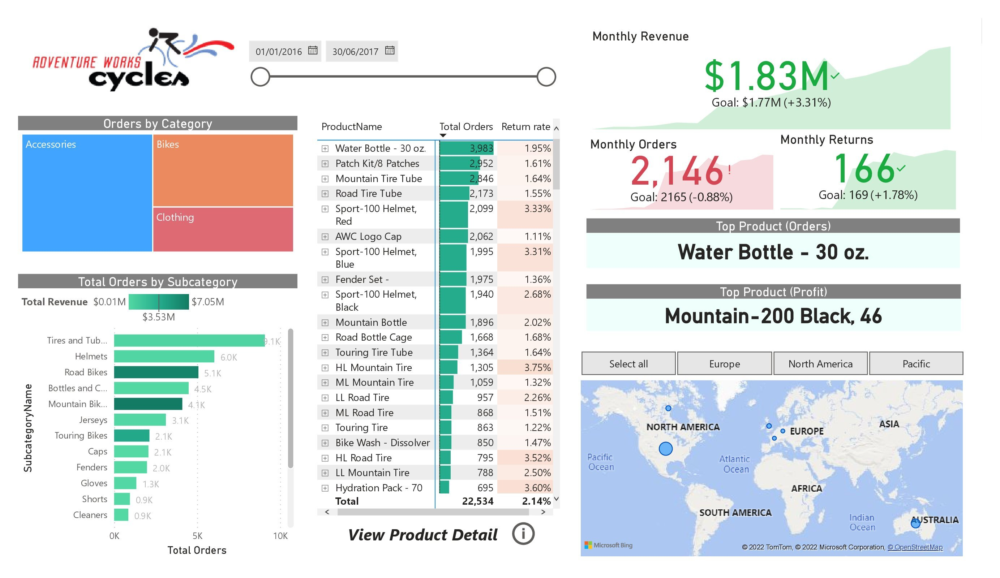
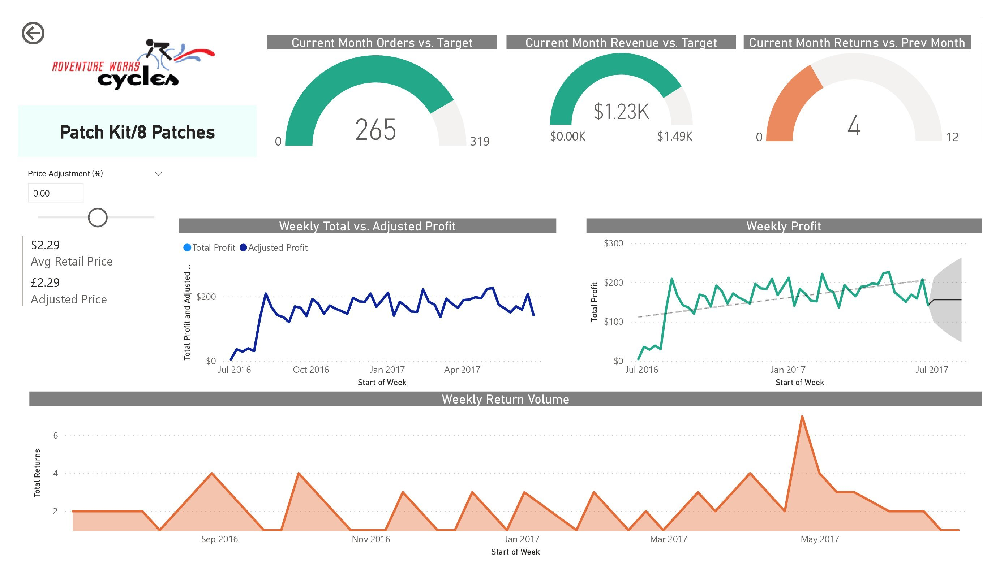
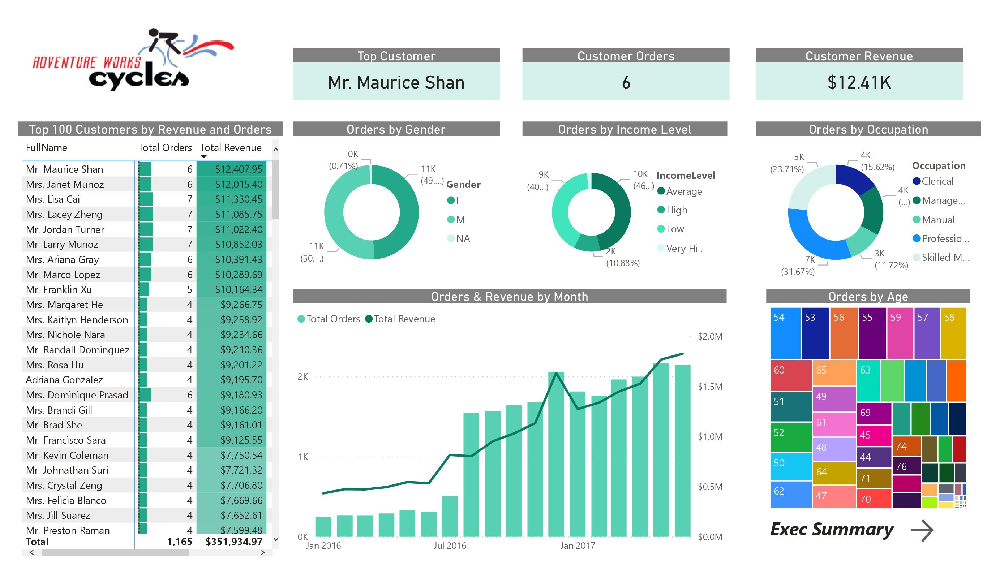

Business Intelligence
in Power BI
The assigenment of this project was to create business intelligence solution based on raw CVS files.
The data was firstly edited with Power BI query editor, later DAX were added
and lastly an interactive report, as you can see below, was designed.


